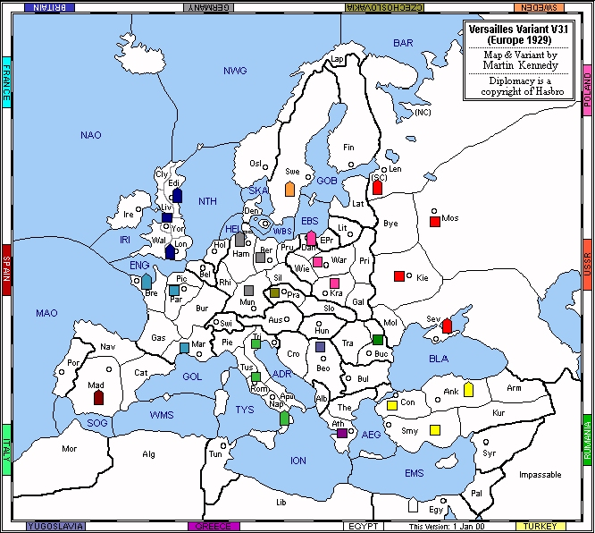

British Prime Minister Neville Chamberlain returned from the 1938 Munich conference as a hero, waving his famous scrap of paper and declaring "I believe it is peace in our time." Yet, within a year, Europe would be engulfed in another war - the very event that the great powers of Europe had laboured to prevent. The tumultuous period between the wars is the backdrop for the Versailles Diplomacy variant (version 3.1). Set in 1929, this variant captures the troubled years wherein the seeds of conflict were sown.
I’m fairly new to the world of Diplomacy, but it seems like there’s a variant to suit just about every taste. Some variants are dizzyingly complex, others are cunningly simple, and many are just plain weird. However, if you’re looking for a variant that will challenge your diplomatic skills, then I encourage you to try Versailles. At a glance, it looks a lot like Standard with a few dashes of Modern thrown in for good measure. However, there are some subtle changes that (I believe) escalate the importance of negotiation and intrigue. Designed by Martin Kennedy, if you like the challenge of managing complex alliance structures, you’ll enjoy Versailles thoroughly. Check out the Versailles home page (http://www.users.bigpond.com/kennedy4/) for more information.
The treaties of St. Germain (1919) and Trianon (1920) created a host of new nations in the Balkan Peninsula via the dismemberment of Austria-Hungary. Granted, an abundance of unguarded neutrals between Italy and Turkey might create some interesting conflicts, but it would likely upset play-balance. Kennedy’s solution was to create seven minor powers, each possessing a single army or fleet. The minor powers are Czechoslovakia, Egypt, Greece, Rumania, Spain, Sweden, and Yugoslavia. For simplicity and added intrigue, each minor is controlled by one of the major powers. E.g. Britain might control Egypt while Germany controls Yugoslavia.
In the basic game, each minor is pre-assigned to a major power. These minors act as additional home SCs (supply centres) for the major powers. For example, Britain can build units in Edinburgh, Liverpool, London, or Egypt. To some extent, every nation can produce units on the other side of the board. Do you think you have Italy bottled up in the Mediterranean? Think again, because Italy just built a fleet in Sweden. Matters are no longer neatly divided into Western Triangles and Eastern Squares. Everyone is interested in everyone else’s business.
In the advanced game, players actually control two separate powers and the pairings are not fixed. Also, major powers cannot use their builds to create units in minor powers. Minor powers must earn their own builds, and they can also be eliminated from the game – even by their sponsoring major power. When joining an advanced game, players specify both their major and minor preferences, with the majors indicated by the first seven characters and the minors by the last seven. An example might be SET PREFERENCE=BFGIPTUCEHRSWY.
In both versions, the control of the minor powers by the major powers encourages cross-board diplomacy during the earliest stages of the game. I found this to be a very refreshing change, as it forced me to "raise my head" and examine the entire board. Also, because of the minors, very few "naturals" exist – where a major power is guaranteed to capture a certain SC during the first year. For example, in Standard Diplomacy, Turkey can easily capture Bulgaria on the first move. However, in Versailles, Rumania or Yugoslavia can just as easily repel the Sultan. As a result, early movements often require at least the tacit permission of several other nations.
In examining each major power, I will comment briefly on some of the challenges faced, recommend useful minor powers (for the advanced game), suggest some opening moves, and examine likely alliances. For the most part, my observations apply only to the basic version. The advanced version is more difficult to analyze, since major-minor pairings are not fixed. Therefore, please bear in mind that many of my observations will not apply to the advanced version.
|
Britain (B)
France (F)
Germany (G)
Italy (I)
Poland (P)
Turkey (T)
USSR (U)
Minor Powers |
 |
As mentioned earlier, much of the preceding analysis does not apply to the advanced version. This is because major-minor pairings change from game to game. In fact, play balance can suffer quite dramatically depending on the pairings. In particular, France must beware control of Spain by Britain, Germany, or Italy. Similarly, the disposition of Sweden may have major repercussions for Britain, Germany, and USSR. In short, the scales can be tipped any number of ways.
When selecting powers, some players will try to improve their positions by giving preference to geographical groups of majors and minors. For example, a Mediterranean strategy might list Italy and Turkey first along with Egypt, Spain, and Yugoslavia while an alpine strategy would target Germany and Italy along with Czechoslovakia and Yugoslavia. As a result, minor powers often end up in close proximity to their major powers.
Perhaps the greatest change is the loss of cross-board builds. For example, Britain can no longer use its builds in Egypt. Minors are treated as separate powers and they must earn their own builds. By the same token, minor powers are eliminated once their centres are lost. During the later stages of the game, this can create some interesting combinations. Just imagine two players sharing a three-way draw!
For better play balance and diplomatic intrigue, try the basic game. Don't let the name fool you. There's nothing basic about basic Versailles. The advanced game introduces the challenge of selecting and managing two separate powers, but the pairings can quickly tilt the board in one direction.
In some respects, the 1930s were the twilight of classical diplomacy. After World War Two, international relations were over-shadowed by the global hegemony of the super-powers. The fluid alliances of the pre-war era were replaced by solid partnerships that were reinforced by growing industrialization and international trade. However, the dynamic of hegemony is well represented in the game of Diplomacy. In fact, hegemony is the ultimate goal of each game. We call it a solo victory.

|
Craig Murray (CraigMurray@Telus.net) |
If you wish to e-mail feedback on this article to the author, click on the letter above. If that does not work, feel free to use the "Dear DP..." mail interface.